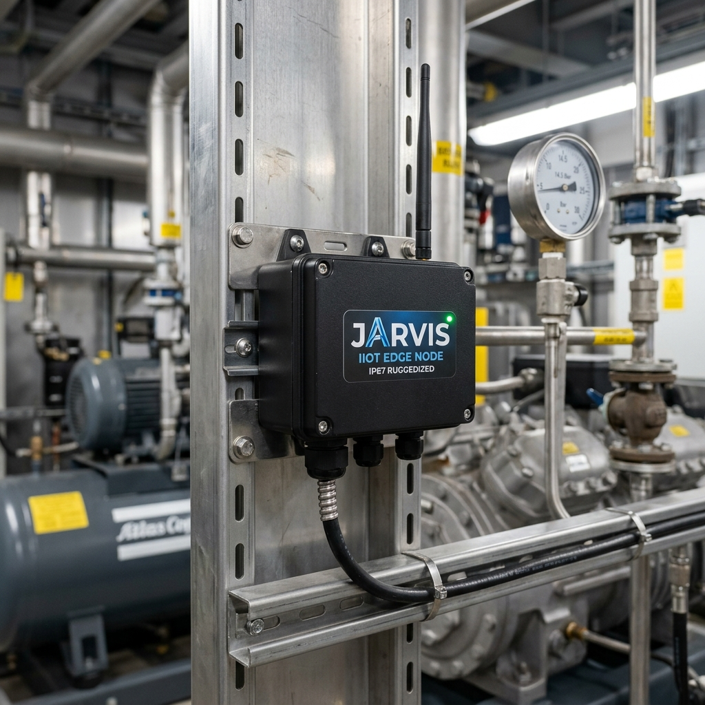

Nossos nós são encapsulados em carcaças com grau de proteção IP67, resistentes a jatos de água e poeira industrial, essenciais para o ambiente de compressores e câmaras frias.
O design modular permite a fixação via trilho DIN ou suportes magnéticos, garantindo que a infraestrutura do cliente não sofra modificações estruturais para o monitoramento.